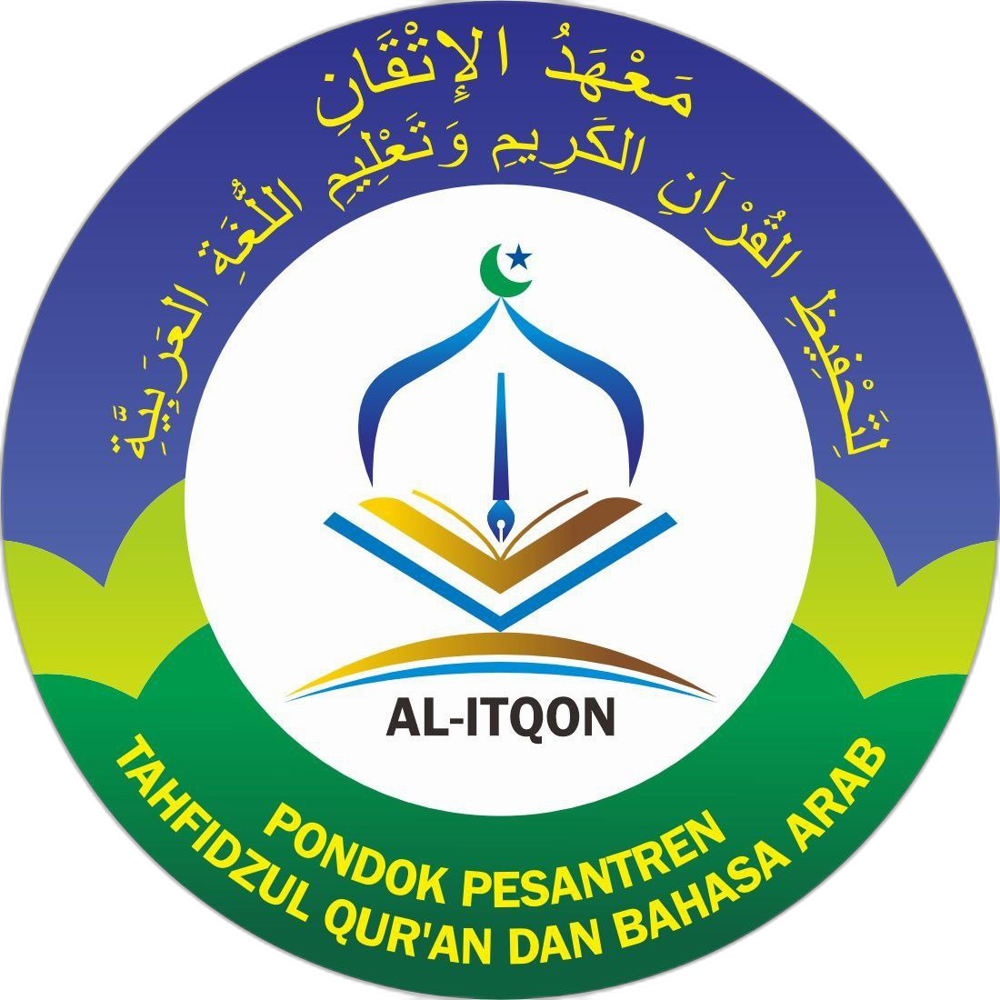
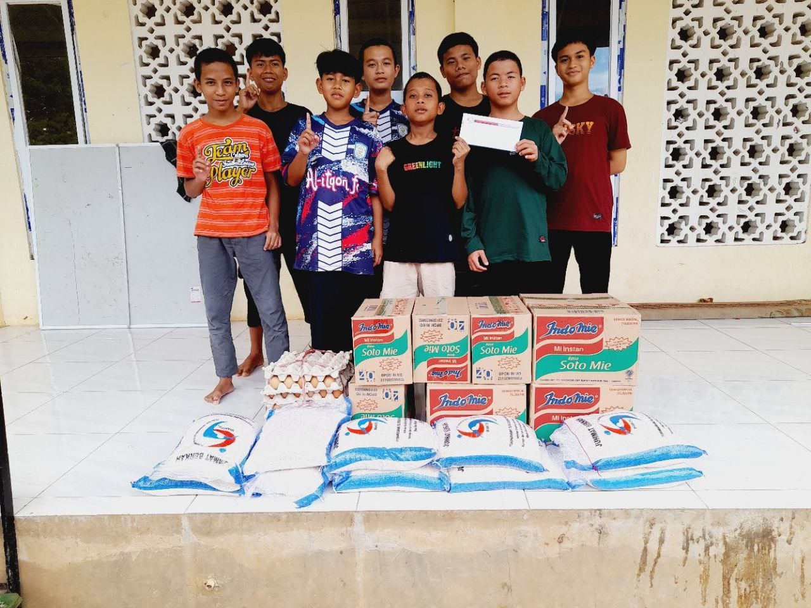

Pondok Pesantren Tahfizh Al-Qur’an Al-Itqon Gowa
Mencetak generasi Qur’ani yang berilmu, berakhlak, dan berkontribusi untuk umat.
Lihat ProgramTentang PPTQ Al-Itqon Gowa
PPTQ Al-Itqon Gowa adalah Pondok Pesantren Tahfizh Al-Qur’an yang berfokus pada pembinaan hafalan Al-Qur’an, penguatan adab, dan pemahaman ilmu syar’i sesuai manhaj Ahlus Sunnah wal Jama’ah.
Selengkapnya
Program Unggulan
Tahfizh Al-Qur’an
Program hafalan Al-Qur’an dengan target dan pendampingan musyrif.
Tahsin & Tajwid
Pembinaan bacaan Al-Qur’an sesuai kaidah tajwid yang benar.
Pembinaan Adab & Akhlak
Penanaman adab islami dalam kehidupan sehari-hari santri.
Dirosah Ilmiyah
Pembelajaran dasar-dasar ilmu syar’i secara bertahap.
Berita Terbaru
Kegiatan Tasmi’ Santri
12 Agustus 2025Santri PPTQ Al-Itqon melaksanakan tasmi’ hafalan Al-Qur’an.
Dauroh Tahfizh Intensif
5 Agustus 2025Kegiatan dauroh untuk meningkatkan kualitas hafalan santri.
Wisuda Tahfizh
28 Juli 2025Wisuda santri yang telah menyelesaikan hafalan Al-Qur’an.